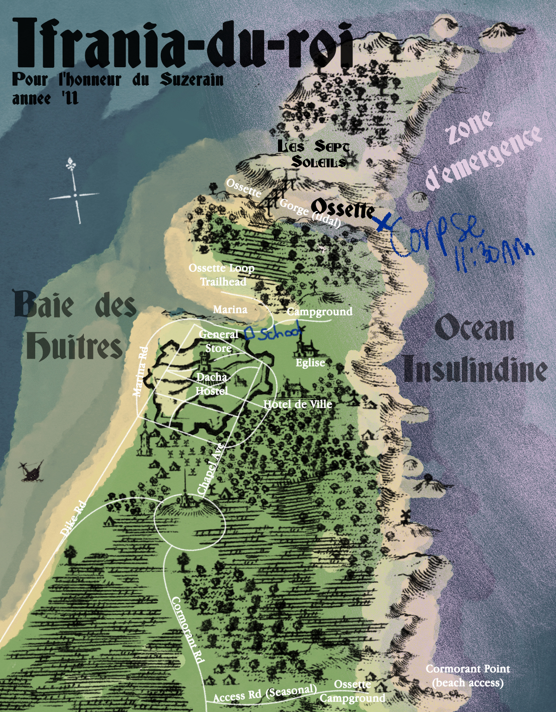

Chapter 4: The Last of the Pretermodern Seraseolitic Wolves
Day 4
TO DO:
1. Find satisfactory alibi for Det. HDB 2. Recollect previous meeting w HDB
Kim opens to a new page in his vacation-turned-investigation notebook, and slides two coffee mugs and a bowl of sugar out of the way so Harrier can see the page. "Let's make a list of what you do remember," Kim says, "to start with."
"All right," says Harrier, still chewing his breakfast sausage. They're sitting in the mostly empty cafeteria of the Dacha Hostel, at a tiny cafe table. The time is 0800 hours. He takes Kim's proffered pen and starts writing. Kim watches for a moment, reading his bullet points upside-down. By the third list item, Kim sees the problem.
"Ah, Detective," Kim says. "I meant what you remember about yesterday."
Harry looks up. "Oh," he says. "Aren't we investigating?"
His notes read:
- 5'10", ~180lbs- Brown hair, receding - Graad originally but grew up in
"We are investigating you," Kim says. "We are not investigating the death of Armin van Mauer. We don't have the jurisdiction."
Stymied, Harry looks down at his list. "Oh."
Pause.
"But..."
"The deal was for us to clear your name," Kim says, taking the notebook back. He flips to the next blank page. "By finding your alibi. You say you were nowhere near the gorge at the time of the murder. I believe you. We need proof. We need somebody who saw you, preferably multiple someones, at multiple times, nice and spread out." Kim divides the new page with a vertical line. "I would also like to find out more about your argument with the victim, and why you can't remember it."
Harrier the sober cop stares at him like he's doing long division in his head for a completely unrelated problem.
ESPRIT DE CORPS: Evaluation of Officer Du Bois's competence is pending. Check back at end of day.
"Who's going to investigate the death?" Harry finally asks.
"I don't know," Kim says. "The local force is unequipped, and the nearest authorities are currently unreachable. Failing anything else, we can send them a letter or go to the port by omnibus." These ideas are both unappealing for a number of reasons. Kim wishes for a long-distance 'phone or radio. Traveling out here is like traveling back in time.
"So you want to alert the 'authorities'?" Harry says, with evident skepticism.
"Yes," says Kim.
"Why?"
"Because it's the correct thing to do, Detective," Kim says steadily. "We are officers of the RCM, not vigilantes."
Kim begins to label his chart. Left column: HDB. Right column: Witness.
HDB | Witness 8~10PM: Cafeteria. ✓ KK 10PM: Dacha desk. _Claudine Adedayo, ✓ KK 11PM: 12AM: 1AM: 2AM: 3AM: ~3:30AM: Outside Dacha (fight w AVM). _ Alexei Volya, _C. Adedayo 4AM: 5AM: 6AM: 7AM: 8AM: 9AM: 10AM: 11AM:
Chart complete, he looks up expectantly at Harrier. "We finished the card game at around 10. I saw you at the front desk with Claudine. Where did you go next?"
"I went out for a walk," Harrier says, "to stretch my muscles before going to sleep. No access to the old anesthetic." He smiles sheepishly. "I went down the hill, went to the general store, stayed there for a while, chatting with the clerk; wandered around the docks in the dark, shot the shit with some old drunks, came back."
"Did they give you anything to drink?"
"No."
Kim is writing. "And about what time did you come back?"
Harry pffs indecisively, the nonverbal Revacholian expression of the inexpressible. "Two hours, maybe. Around midnight... No, it must have been after midnight, because Claudine wasn't at her desk."
Kim makes note.
"And did you speak with anyone when you came back?"
Harry scratches his head. "Think so. Yeah. That rich guy was having a drink at the bar. He tried to get me to join him."
"But you didn't?"
Harry shakes his head.
Kim makes note.
"Then?"
"Then, I went to bed." Harry thinks deeply, staring at the ceiling. Recovering these relatively recent memories seems to be a laborious task. "I slept... badly. No, that was last night. No, that was the night before last." He looks back down. "I always sleep badly."
"Withdrawal," Kim comments.
Harry nods.
"It should get easier in another month or so," Kim says, looking back down at his notes. "Did you check the hour during the night?"
"Many times."
"Do you remember 3 AM? Any time between 3 and 4?"
Harry shakes his head. "No. I must have drifted off around then. Hey, do you think it's possible I sleepwalked?"
"Do you have a history of sleepwalking?"
Harry shrugs in an exaggerated manner.
"Right," says Kim. "You don't know." He sighs. "I suppose anything is possible."
"Especially in a place like this," Harry adds.
"A place like what, Officer?"
"L'émergence."
"We're not in l'émergence right now. The frontière is another kilometer to the northeast."
He nods towards the map of Ifrania, framed on the wall above the fireplace. A purple mist, grainy and light like chalk dust, falls diagonally over the tip of the tiny cape, covering l'Ile des Soleils, the swamp to the north that he'd hiked through yesterday, and the eastern beaches.
Harry doesn't turn to look. He just shakes his head. "The boundary shifts all the time; anyway, no modern instruments are finely tuned enough to measure where it begins and ends. You think a kilometer makes a difference to the Pale? Pale doesn't care. Everyone likes to say that l'émergence comprises the 50 kilometers around Porch Collapse, but where does it say Pale follows neat multiples of ten? Nevermind the human metric system. That's information. You know it hates that." Harry shakes his head again. "No way. Palestorms hit Ifrania sometimes, right? That means it's part of the zone. We're in l'émergence right now, man."
BRAIN BOUNCER: That's terrifying.
SPEED DEMON N° 1111: That's cool.
DATA COLLECTOR: So, the amnesiac is some kind of expert on the Pale?
"You have an interest in entroponetics, Detective?" Kim asks, sidestepping the outlandish hypothesis.
"You don't think my theory is worth pursuing?" Harry counters, sidestepping the sidestep.
"No, I don't think 'The Pale made me do it' will hold up in a court of law," Kim says, looking back down at his notebook.
"The Pale will do worse before it's all over. You can count on that," Harry says.
Kim decides not to react to this prognostication.
"Well, I don't know how much you remember from your Pale-related reading, Detective, but there are a couple recorded cases of murder during psychosis induced by prolonged Pale exposure. However, those were committed by people with hundreds of hours of exposure—repeater workers, aerostatic pilots, paledrivers. I don't think that precedent applies to your case."
"But it could potentially apply in the murderer's case," Harry insists. "What about someone losing their sanity after living their whole life in l'émergence?"
"Lots of people live in or near the zone d'émergence for their entire lives," Kim says. "In the Semenine Islands, for instance, on Sereglee and Banaital."
Harry hmms thoughtfully. "I'll have to do more research."
"You won't," Kim says, "because you are not investigating this murder. Let's return to what you are investigating, which is your alibi. You slept. Tell me what times you remember."
"2:30-ish, 4:41, 5:10, 5:40, 6:00..."
COMPASSION: He really sleeps badly.
"What time did you get up?" Kim asks.
"Around 7," Harry says. "I hate waking up in the dark."
"Did you leave your room?"
"Yes," Harry says, "I had breakfast with one of the other guests. He's an older ex-military guy. Valentin."
At that hour, Kim was already trekking north. "Until?"
"Probably 8?"
They were now nearing the outer edge of the timeframe. "And then?"
"Listened to the milieus in the book nook," Harry says, pointing towards it. It was the same shelf from which Kim had pilfered his embarrassing book at 6:30 AM yesterday.
"What did you hear?"
"It was a kids' show," he says. "There was a kid listening. Little girl. I let her choose. It was about talking animals who live on a magical island and teach you Walder. She got bored of that after a couple minutes, and switched it over to BCN. It was some anthropologist being interviewed. She was talking about the history of cannibalism in Mundi. I thought it was a little gory for a kid, but she seemed to be into it."
"Did you listen to the whole program?"
"Yes."
"So until 9."
"Then a quiz show came on."
"Did you stay to listen to it?"
"No. I hate those."
ESPRIT DE CORPS: (challenging—success) He used to be really good at trivia. Now he sucks at it, and he's bitter about that.
"Went for a walk. I said hi to Henri on the way out, he'll remember, 'cause I annoy him. Then I went down to the bay and poked around on the beach for a while. 'Til noon. Plenty of fishermen down there probably saw me. Then I came back here and listened to some more radio in my room... Then I got arrested for murder. That was around 4 PM. Does that cover everything?"
Kim finishes filling in the chart.
HDB | Witness 8~10 PM: Cafeteria. ✓ KK 10PM: Dacha desk. _C Adedayo, ✓ KK Town, docks, General Store. _Store clerk 11PM: Docks. _Dock drunks 12AM: (appx) Dacha. _Vesper Dad 1AM: Bedroom ∅ 2AM: " " ∅ 3AM: " " ∅ ~3:30AM: Outside Dacha, (fight w AVM)._ Alexei Volya, __________ 4AM: Bedroom 5AM: " ∅ 6AM: " ∅ 7AM: Cafe. _Valentin __________, Claudine 8AM: Radio. _Vesper kid 9AM: Radio, town. _Henri, ___________ 10AM-11AM: Beach (bay). _____________
"So, you do not have an interest in entroponetics, I take it?" Harry says, as Kim finishes underlining the blank spaces they needed to fill with information. "You never ponder the Pale?"
"I'm a police detective, so, no," says Kim.
"Ah," Harry says, taking a sip of his coffee. He has already added a teeth-rotting volume of sugar to it. "A man of concrete facts. A student of the physical laws."
Kim offers no comment.
"So why come here?" Harry asks.
Kim looks up from his notes. "Here?"
"To the peninsula. To Ifrania. This is the closest civilian-inhabited point to the Pale in the ZoC."
Kim looks at the detective for a moment. "That may be true, but it's not why I came," he says. "It wasn't my idea. I wanted a place to hike, and someone at the precinct suggested the Cliffs of Valènce. The bus fare is cheap, and so is the accommodation."
"Do you hike a lot with your dog?"
Kim looks back down at his notes. "No," he says.
"It's not your dog, is it?"
BRAIN BOUNCER: How the hell did he know that?
COMPASSION: Because you don't like the dog, and it's very obvious.
"What makes you say so?" Kim asks, not looking up.
"You never called her by name when we were walking back from the lockup last night. I didn't see you pet her, either. She likes you, though," he adds, "Even though you don't like her."
"It would be foolish for me to dislike a dog," Kim says, flipping to a new page to make an ordered list of witnesses and potential witnesses.
"What breed is she?"
"Königsteiner Tervuren."
"What's her name?"
"It's not important," Kim says.
"Who's her owner?"
"I am," Kim says, finally looking up. "It's my dog, Detective."
ESPRIT DE CORPS: He could tell it was a sensitive topic. He was just trying to see how far he could get.
DATA COLLECTOR: This guy is persistent. He doesn't miss signs of discomfort in his witness, the way I do sometimes—he pretends to miss them. A keen data collector himself.
BRAIN BOUNCER: Keen or not, he'd better knock it off.
"That's fine, I'll just ask her what her name is myself," Harry says. "She's coming with us, right?"
"It wouldn't be right to leave her cooped up in the stables all day, so yes," Kim says, ignoring the detective's implication that he can speak Dog. "She won't be much help."
Dacha - Henri - Claudine - Vesp dad - Vesp daughter - Valentin - Alexei - Second witness? (Who?)
Town: - Store - Canvas: docks - Canvas: fishermen
After they bus their breakfast dishes, Kim waits while Harry changes into his 'investigation getup,' which turn out to be the RCM blazer, a clean shirt lifted from the hostel lost and found, and a truly appalling necktie. The shirt looks like a woman's cut, but Harry doesn't appear to notice or mind. Kim feels uncomfortable going on duty—even pseudo-duty—with neither his uniform nor bomber. His off-duty jacket is his leather motorcycle jacket, which, while hardy and practical, does not give him the appearance of an authority figure. It gives him the appearance of a punk, or, at best, a middle-aged former punk. "Sweet jacket," Harry comments, admiring it as he adjusts his horrible tie (loosening it).
"You don't have your badge, do you?"
Harry shakes his head. "I didn't think I would need it on vacation."
"So between us, we have one badge, and one uniform—of sorts."
Harry tugs at his blazer, giving Kim a questioning look. "...Do... you want to wear it?"
"Um—no, Detective. Thank you." Kim clears his throat. "You should take the lead. You at least have the appearance of a detective, and it's your neck on the line."
Harry nods approvingly. "And you can be my intimidating bodyguard in the cool leather jacket."
"Let's not get carried away with the fantasy." Kim pockets his badge. "Where do you want to start?"
Harry ponders. "Think of a number between 1 and 6," he says.
Kim frowns. "Okay."
"What is it?"
"2."
"Then we start with Mr. Moneybags Vesper," Harry says.
"Did you just choose randomly?"
"He was #2," says Harry. "You chose."
Kim's mouth opens to argue.
LOGIC: There's nothing strictly... wrong with that as an investigative method. But...
INTERPERSONAL ACUITY: But it is wrong.
Kim shuts his mouth and follows Harry.
The wealthy Vespertine family is at a table in the cafe, eating breakfast and not looking impressed by the offerings. The preteen daughter, today wearing a checkered pinafore over a baby blue dress that matches her mother's, and rainbow barrettes in her blonde hair, surveys an anchovy with skepticism. Her father reads an auto magazine.
"No daily papers out here," he says without preamble or greeting as the detectives arrive.
"And is that a good thing, or bad thing, in your opinion, sir?" Harry inquires, clasping his hands behind his back like a waiter.
"It's splendid," he says, stroking his (equally splendid) mustache. "Liberation from the 24-hour news cycle is just what I have so desired. Open air, open space, peace and quiet... it's just marvelous."
CONCEPTUALIZATION: (medium—failure) Am I seriously supposed to believe that these three stylish, well-fed people are walking around the muddy streets and rainy beaches of this single-cylinder fishing village—and enjoying it?
Kim glances at the wife to gauge her opinion on this 'peace and quiet'; she is not listening at all, but staring intently at her bowl of berries like it has secrets to tell.
He glances at the daughter instead. She's reading a thick hardcover book titled Filippe the Squanderer: Opulence, Oppression, and Opiates.
"What can I do for you, officer?"
"Much obliged, sir. You can fill in some gaps in my memory. You see, I recently suffered from an acute encephalopathic event..."
The rich guy agreeably confirms Harry's midnight return, and even confirms that he heard him go upstairs to his room afterwards. Kim puts a check next to his name in the chart. The man also adds that Armin was nowhere to be seen in the common areas at that hour of the night.
"How late were you at the bar, sir?" Kim asks, looking up from his notebook.
The Vespertine man glances from Kim back to Harry, looking for confirmation that he should answer. "It's all right if your assistant asks questions?"
Kim's expression settles from polite interest to acute neutrality.
"Huh?" Harry says, seeming thrown off.
The Vespertine man nods towards Kim and raises his eyebrows at Harry again.
"My assistant?" Harry says, still seeming lost.
INTERPERSONAL ACUITY: He's... playing dumb?
"Your ...associate?" the Vespertine man tries again, cheeks now slightly red.
Harry looks slowly around at Kim, as if he is expecting to see some other person standing at his elbow. "Oh!" he says, with exaggerated surprise. "You must mean Lieutenant Kitsuragi, the twice-decorated detective of the 57th precinct of the RCM. We must have forgotten to show him your badge, right, Kim?"
ESPRIT DE CORPS: What the hell is going on?
INTERPERSONAL ACUITY: Euh...
Kim, trying to keep his footing in this very surprising conversational power struggle, decides after a second's hesitation, to follow Harrier's lead—"Khm... Yes, it seems we did."
"Probably because he never asked to see mine," Harry adds cheerfully. "Don't you think?"
Kim stares from one white man to the other. "Probably, yes," he agrees.
"So probably he would be interested to see yours," Harry says, cheerful tone getting louder and louder, "And see your rank, and your years of service, and both your commendations, printed next to your foreign last name, in large, easy-to-read letters. Don't you think so?"
Harrier looks at M. Vesper with a wide, affable grin. The man's cheeks are distinctly pink. So are Kim's ears. He can feel them burning.
The two Samaran laborers at the next table are listening with frowns on their faces.
"I'm, er, terribly sorry, uh, Detective," the Vespertine says, to Kim's right lapel. "I certainly meant no—and should never have assumed—in Vesper I—"
"Lieutenant," Kim corrects calmly. Inside him, a powerful embarrassment is wrestling with a vicious, elated pride.
BRAIN BOUNCER: Keep a lid on it.
"Lieutenant—you see, I'm actually quite forward-thinking in—"
"My question, sir, was how late you were at the bar two nights ago," Kim repeats, as if nothing at all had happened. "We are trying to confirm Armin Van Mauer's movements at that time."
"Uh—I must have retired to bed around 1," he says, stroking his mustache in a self-soothing motion. "Darling, does that sound right to you?"
His wife has not been paying attention. "Hm?"
DATA COLLECTOR: Unlike their daughter, who has been listening intently. She hasn't turned a page in several minutes.
ESPRIT DE CORPS: Thank god Harrier is here to interrogate the kids instead of you. Hey, speaking of Harrier, did you see that? Holy shit.
SPEED DEMON N° 1111: That was badass! He humiliated him! Crushed him!
"So you did not hear an argument between Detective Du Bois and Mr. Van Mauer?" Kim confirms.
M. Vesper shakes his head.
"Nor did you, Miss?" Kim says, looking at the daughter.
"What's your name?" Harry asks.
"Sabine," says her mother. "Sabine, sit up straight and answer the police officer."
Sabine raises her head from her book and fixes Harry with the piercingly unimpressed gaze of a 12-year-old.
"You didn't hear any arguing outside the hostel in the middle of the night?" Harry asks.
"No, officer," Sabine says.
"And can you confirm that you have met Detective Du Bois before?" Kim says. "Yesterday morning?"
"Yes, officer," Sabine says.
"You listened to radio milieus together here in the Dacha?" Kim says.
"Yes."
"What about?"
"Learning Walder for children," she says. "That was boring, so I changed it to BCN."
"What was on?"
"An interview with Professor Kädri Malk," Sabine replies promptly. "She was discussing her new book about the history of human cannibalism in Mundi from pretermodern times to today. It's an underexplored area of history," she adds, "because modern Occidentals view cannibalism as a primitive practice particular to the 'uncivilized' peoples of other isolas. But in truth, it's perfectly safe, as long as you follow normal food safety precautions and don't eat anybody who had a prion disease. Many of the negative impacts associated with cannibalism are actually just symptoms of Tzaraath being transmitted within a closed population."
Kim retrieves his eyebrows from where they had climbed high above his glasses. In the four-adult silence that follows this speech, he checks off 8am-9am in the chart.
"That's splendid, darling," says Sabine's father, smiling encouragingly at his child. "We should all be more open-minded."
"Why do you let her listen to those things?" Sabine's mother hisses at her husband, as if the officers aren't there at all. "It's disgusting."
"She's an intellectual omnivore!" Sabine's father says jovially, his wife's rage rolling off him like water off an oily duck. "Just have to hope that didn't give her any ideas, ha-ha!"
Harry laughs along with him. Sabine seems satisfied with her effect on the adults and returns to her book.
They leave the Vespertines to their unsatisfying breakfast among the fishermen.
"Here's what bothers me," Harry mutters to Kim as they climb the steps back up to the lobby, "—what are they doing visiting this place? It's peaceful and quiet on the peninsula, sure, but let's be honest, as a town, it's kind of a shi—"
"Detective," Kim says, interrupting the rambling. Steeling himself, Kim turns to face the detective, and nudges his elbow so he'll look at him. "Thank you for sticking up for me back there."
BRAIN BOUNCER: Just say it and move on.
"—Most RCM officers wouldn't have corrected someone like that, and if they had, they wouldn't have made a big deal out of it. It's not professional to humiliate an actual witness, but it's appreciated."
Harry frowns, and Kim tries to figure out what he's thinking.
INTERPERSONAL ACUITY: (medium--failure) Euh... Indeterminate.
DATA COLLECTOR: You never know anything. You are so useless. The rest of us do all the work for you, do you know that?
INTERPERSONAL ACUITY: Help me out, here. Do I trust him, or not?
BRAIN BOUNCER: No more than most of your colleagues, no more than before. Maybe it will be the last time he defends you like that. The only thing you know for certain is—you enjoyed it.
"Don't mention it," Harry says, smiling proudly. "Racism is a wedge used by the ruling classes to keep the workers from uniting against them. The bourgeoisie fall in line because they are afraid of losing what little they've hoarded. When the uprising comes, their petty prejudices won't protect them."
"Euh... yes. Well."
DATA COLLECTOR: A man of principle.
VOLTA DO MAR: What else would you be, if you came back from the dead with zero tools and had to construct a new life on the fly?
Harry claps him on the shoulder and the moment, mercifully, ends. Claudine is behind her desk, entering sums into her calculatrice with violent speed. They interview her next.
She confirms Harry's presence in the hostel at breakfast time the day before, around the time when the body was most likely being moved to the beach. As for the night before that, the night of the fight, she says she didn't see Harry herself.
"I just heard the fight," she says.
"You're the second witness?" Kim says.
"That's me," Claudine says, looking at Harry. "I woke up and heard you two going at it, so I got out of bed and called the Constable on the radio."
"Could it have been another man?"
"I don't think it was, but I suppose it could have been," says Claudine, considering. "I'd have to hear his voice."
"I have no memory of the fight," Harry says, raising his hand like he's swearing in court.
"Were you drunk?" she asks bluntly. "You sounded drunk."
"I don't believe so, no," Harry says. "I have serious chlorosis of the liver, madame. My next drink could kill me. So I take care not to drink at all."
ESPRIT DE CORPS: I take a lot of care, in fact. It's pretty much all I do all day. I wake up. I do not drink. Not a lot of room for other stuff, upstairs, downstairs, or in the middle.
"My... colleague's liver, aside, Ms. Adedayo, we are just trying to establish a clear timeline. You've been very helpful. Could you discern what the argument was about?"
She thinks. "It was something you both wanted. I suppose it might have been money. Or a woman. There was certainly a sense that one of you had double-crossed the other, or gone back on an agreement. I distinctly heard Armin say, 'I never agreed to that,' and you say, 'Yes you did!'"
Kim dutifully notes it down.
"So you called the Constable, and then the fight broke up of its own accord?"
"That's right."
"Did you hear—why? Why did we stop?"
"I think it came to blows. I heard scuffling. Then one of you backed off. Armin, I suppose, since you don't seem to be bruised."
Harry frowns, doing the math.
DATA COLLECTOR: There was no bruise on Armin's face either.
"Where did we go after that?"
"You both left. Neither of you came back into the hostel."
"You never saw me come back in?"
"No," Claudine said. "The Constable came and went, and then I went back to sleep."
Harry drummed his large fingers on his chin thoughtfully. Then he shoved his hands in his pockets.
"The Constable interviewed the other witness, Alexei, didn't he?" When she nodded, he said, "Do you know where he is? We need to talk to him too."
"He's already gone out for the day," she said. "He's studying the Six Soleils. He walks there and back every day."
"Every day?" Kim says, looking up from his notes. He and Harry exchange a look. "Did he go yesterday?"
"Yes," she said, and at the same moment, Kim remembered seeing his muddy boots in the afternoon.
ESPRIT DE CORPS: Jackpot. Witness time.
BRAIN BOUNCER: Except how we're not investigating the murder.
ESPRIT DE CORPS: Khm. Of course. I meant for Harry's alibi.
"We'll have to catch him when he comes back," Harry says. "He might be a crucial witness. He could have seen the murderer moving the body, or even..."
"Khm."
Kim looks at him with a raised eyebrow. Not investigating the murder. Harry reluctantly trails off.
They conclude with Claudine and hunt around the hostel for Valentin, Harry's breakfast buddy from the day before. He's nowhere to be found.
They find Henri out back, in the stables. It's a dreary but dry day, crisp and cool. The barn is warmly lit, the cement floor is swept spotlessly, and the wireless is playing quiet music. Henri the surly teen is cleaning one of the horses' stalls, spreading fresh straw over the floor. Hearing their approach, Henri steps out of the stall and shuts the radio off.
"She's in that one down there," Henri says to Kim. "I caught her trying to dig out of that other stall through a gopher hole."
"Hi Henri," Harry says.
"Hi, Harry," Henri says, rolling his eyes. His jawgear really is huge. It orbits his head and mouth like a hoop skirt.
INTERPERSONAL ACUITY: It's no wonder he hides out back here with the animals instead of around other people. Strangers and other kids are probably never nice to him.
"What were you listening to on the radio?"
"I dunno," he says, in a voice that communicates none of your business. "Uh, music?"
"Henri and I got off to a rocky start," Harry tells Kim in a faux-confidential manner. "I saw him reading a Nagatani comic, and in the course of our small talk, I implied that FoxMan could beat Nagatani in a fight—"
Henri is rolling his eyes again.
"—and ever since then, Henri has been rather unimpressed by my sense of taste."
Henri snorts. "Ridiculous to even..." he mutters under his breath.
"I did not understand any of the words you just said," Kim says to Harry.
Henri snorts again. Harry guffaws. The two of them exchange an 'Unbelievable!' look.
"Listen, H-man, did you see me yesterday morning?" Harry asks. "Kim is my colleague, we're looking into some stuff."
"Colleague?" Henri says. He looks at Kim with new interest. "You mean you're a detective too? Even though you're a—bino?" He remembers it's rude to say right in the middle of saying it, but it's too late.
"Yes," says Kim. "It poses some challenges. Mostly surrounding my other colleagues being condescending about it."
"Oh." Henri nods.
INTERPERSONAL ACUITY: He gets it.
The juvie script comes back to him, faded and patchy in some parts. Clearest where he had edited it himself, for his own sanity. "Sometimes my poor eyesight makes detecting difficult. That's why RCM officers work in pairs—to complement one another's weaknesses and strengths." Why is he being nice to the surly teen? No particular reason, it seems, other than that Harry started it.
"Why would you compliment someone's weaknesses?" Henri says.
"I bet you're wondering how cool it is to fight crime," Harry says, folding his arms and adopting a Cool Guy stance. "Well, we can tell you. It's pretty cool. The only thing cooler is to not do any crime at all, and become an artist."
ESPRIT DE CORPS: ...What?
"Henri, can I ask you something?" Kim says, and Henri transfers his attention away from the bizarre person standing near them. "It's 10 o'clock on a weekday. Why aren't you in school?"
Henri takes his armful of straw and reenters the horse stall. "Our school closed the year before last," he says. "It was under-attended. Most parents make their kids work a few days a week. Everybody was failing. And the profs sucked. They say they're going to open it up again this fall. But they said that last fall." He rolls his eyes, which seems to be his form of punctuation.
"Well, that is highly illegal," Harry says, cheerfully. "Under the Coalition's charter for the Zone of Control. Although I'm sure you and the other kids love it."
"Yeah, it's great," Henri says sarcastically. "I love cleaning stalls and washing towels and bussing tables. I learn so much stuff, and I get to meet so many people my own age. It's really the life."
Kim clears his throat to prevent a laugh from escaping.
"And guess what?" Henri says, looking up from his task again.
"What?"
"Someone started using the school building as a barn for their horses. And other animals, too. Chickens. I think a llama. Don't even ask me where they got a llama. But it's not really meant for that... obviously... it's a school... So the animals are always escaping. I see the lady chasing after them. Her husband just lets them escape. He doesn't care."
"Lieutenant," Harry says to Kim, "I'm no longer confused about why the rich people are vacationing here. This town has everything."
Henri snorts down at the bed of straw. Harry smiles proudly.
"Why are they here?" Henri asks. "Actually, though."
"Why don't you ask them?"
From inside the stall, Henri makes a face at Harry.
"You could ask Sabine," Harry suggests.
"That would be weird."
"I don't think so," Harry says. "Why would that be weird?"
"I'm 14, and she's like, 10."
"It's normal to talk to other people," Harry says seriously. "I do it all the time."
Henri's face communicates everything he thinks about Harry and his relation to the concept of 'normal.'
The dog awaits in the last stall on the right, furthest from the front door. Her straw has already been changed, and she pants with pent-up canine energy. Harry peers over the slats. She wags her tail and barks at them expectantly.
"She wants out," Harry says.
"So you do speak Dog," Kim says mildly. He takes off his glove and snaps his fingers.
Harry leans his arms on the wooden slat, and rests his head comfortably on his elbow. Kim snaps at the dog again, and she sits—tail still wagging. When Kim opens the stall door, she hops up again, and Kim snaps—"Ah," he says warningly. She sits again, barely able to contain it, as he clips on the leash. Harry watches them.
"All right, I asked her what her name is," Harry announces behind him. "She says it's not the name you call her."
"Is that so?" says Kim.
"It is," Harrier says. "She says her true name is Canis Hodophilax."
A little laugh escapes Kim. He scratches his nose, trying to put the smile away.
"Holy hell—did you just laugh?" Harry's voice, behind him, is shocked.
"What did you say?" Kim asks with formidable control, turning around.
"You're smiling! I didn't think you could do that!"
Kim contains it as Canis Hodophilax leads him out of the stall to rejoin Harry. "Did she tell you anything else?"
"She told me that's her true name because she's the last of an extinct species of Seraseolitic wolf."
"Ah," says Kim. "Then you'd better tell her that she is from Königstein, just like all Königsteiner Tervurens."
"Police dogs," Harry says, after another pause.
"I am a police officer."
"But she's not a police dog," Harry says.
"No," Kim says, patiently. "She's my dog."
"Is that why you picked a Tervuren puppy?"
"Bernadette," Kim says.
"Huh?"
"Bernadette is her name," Kim says. "Now come on, Detective."
*
On a day like today, it's easy to remember how close the peninsula is to the Pale; a bay of matter shielding itself against the ocean of nothingness. The clouds over Oyster Bay are gray and close, a shroud overhead that feels like it's coming closer, floating down over the earth to cover them all. Only Bernadette the Königsteiner Tervuren doesn't care—she bounds over the beach like a bird, soaring over rocks and hurtling over docks. Harry walks a ways ahead of Kim, turning over flotsam and jetsam with his hideous shoes, and picking up empty bottles and interesting garbage. The land curves northward and paleward; to the left across the water, west, the mainland of Valènce is a gray blur of cliffs. A few boats dot the water between there and here. It's barely spring, and oyster planting won't start til the water gets warmer. For now, only fishermen brave the water, which is still frigid.
ENDURANCE: As I am well aware.
Harry the Sober Cop stops to talk to every person they pass on the beach, and ask them if they remember seeing him yesterday morning, around the same time, in the same place. An old man with no teeth, a guy collecting tare, a woman repairing fishing nets, a girl collecting driftwood for unknown purposes. Most of them don't remember him. A few do. Harry recognizes all of them, and even knows some of their names, which strikes Kim, considering the other gaps in his working memory.
More checkmarks in his notebook. The timeframe narrows.
As they approach the marina, the beach transitions from wild to industrial with a high chain-link fence.
UNAUTHORIZED PERSONNEL PROHIBITED
DO NOT ENTER
A wooden staircase takes them up the steep, eroded bank of coal-colored sand and back up to civilization. The stairs end on a rickety boardwalk alley between wooden shacks. They emerge from the shadows and into the center of town—the docks. It's immediately clear that this is where the action is. This is the heart of Ifrania. The door of the general store, MARCIN'S GENERAL STORE (Logo: Marlin. Slogan: "If we don't sell it, bonne chance!") opens and closes as they approach; a gang of kids hurries by, buckets in hands, mud splashing under boots; a group of older women sit around a bucket gutting eels, talking in Old Suresne. A heavy, rusting tractor—
TORQUE DORK:Magrave, at least 20 years old. Domestic manufacture? And still running? Incroyable. A silver fox...
—drags a boat on a trailer. The tractor's huge wheels squelch through a mud puddle and turn down the cement slope into the marina, trailer bouncing behind. Seagulls overhead announce their arrival at the bay.
"Shall we start with the shop?" Kim suggests.
INTERPERSONAL ACUITY: Consult the notebook, even though you already have the chart memorized. People find it weird when you remember facts about them.
"You were there at 10 PM," Kim reports.
"Right," Harry says, and leads the way.
The bell jingles to announce their arrival. The store has to be the most crowded place Kim's seen yet in Ifrania—
INTERPERSONAL ACUITY: Too crowded. Leave.
—villagers shoulder-to-shoulder among the trenches of too-close white shelves with no apparent organizational system. About 25% of the shelves are empty. A compost-like smell emanates from the right, in the "fresh" produce section. No one notes their arrival except for the shop's cat, lounging on top of the nearest shelf of cans.
"Mrow."
Harry lets it smell his fingers before he scratches its head. The cat stretches upward appreciatively.
"Friend of yours?" Kim asks, as an annoyed-looking mother pushes past him with her shopping basket and toddler.
"My alibi, right here," Harry says, scratching under the cat's chin.
"Monsieur!" They both turn to see the man behind the counter, a young, tall, spindly-thin Iilmaraan man with curls spilling off the top of his high-and-tight haircut. He wears a white apron, a patterned kerchief around his neck, and little silver stud earrings in both ears.
INTERPERSONAL ACUITY: (medium—success) A comrade.
"Welcome back to the shop," the shopkeeper says to Harry with a smile.
"Hey, Marcin," Harry says, leaving the cat and edging his way to the cash register. He picks up a bottle of citrus-colored soda on the way.
"What can I get for you, monsieur, on such a lovely day as this?"
"This, and one pack of Astras, please."
Marcin takes a pack from under the counter and slides it over the glass with one finger.
ESPRIT DE CORPS: Take out the notebook and start asking questions about the other night. But first...
DATA COLLECTOR: ...First let's observe the Marcin/Harry interaction for clues.
VICE: Important clues.
"Would you really consider this to be a lovely day, Marcin?" Harry asks as he counts out his coins on the glass.
"No rain, the wind is brisk, and you have a friend to share a cigarette with," Marcin says, eyes flicking up to meet Kim's. "A perfect day, if you ask me."
Kim gives him a millimeter's eyebrow raise.
Marcin gives Kim half-of-a-half a smile.
"There." Harry slides the stack of counted coins across the counter.
"Merci," says Marcin. "Your cigarettes."
"Well, Marcin, it would be a perfect day if I was not accused of a heinous crime," Harry says with a weary sigh. Marcin's sculpted eyebrows rise. "But I'm hoping you can help me with that. This is my colleague, Lieutenant Kim Kitsuragi with the RCM. He's helping to verify my whereabouts the night before last."
Though they are already allies, they nod to each other.
"Of course, anything I can do to help, gendarmes," Marcin says. "What would you like to know?"
The Iilmaraan grand-mère behind them clears her throat impatiently.
"Monsieur, can you confirm that you saw Detective Du Bois here the night before last?"
"I can," says Marcin, smiling at Harry.
"Do you remember the time?"
"It was late," Marcin says, as if recalling a fond memory. "I was quite lonely, in the shop with Pacha." Kim surmises that Pacha is the cat. "Detective Du Bois came in, looking for some cigarettes. And some company too, it seemed. He stayed a long time to chat."
"What did you talk about?"
"Oh, this and that. The peninsula. The city. Music."
"Around what time did he depart?"
Marcin glances at the clock. "10:30, perhaps?"
Kim checks it off.
"Does that square with what he told you, Lieutenant?" Marcin asks, with a wink at Harry that Kim does not miss.
Kim closes his notebook. "It does. Thank you for your help, Monsieur."
"Yeah, very much appreciated, Marcin," Harry says.
"Anything else I can assist with?" Marcin says, ignoring the growing queue of shoppers behind them.
"Actually," Harry says, leaning on the counter, "There is."
Is there? thinks Kim.
ESPRIT DE CORPS: Of course there is.
BRAIN BOUNCER: Dammit.
DATA COLLECTOR: Noting the lean towards Marcin to solicit the information. Calculated, or instinctive?
"Another guest at the Dacha. Name of Armin Van Mauer. He's a white guy, brown hair, sort of tweedy. Have you seen him around at all?"
"I see everyone in this town, Detective," the shop owner says with a smile. "Especially you out-of-towners. And I make sure I get all of them talking, so I can learn all their secrets."
"Oh, really?"
"Really. And one thing I will tell you, gendarmes—there has been an unusual number of out-of-towners these last months. In the summertime, sure, there are bathers and hikers. But not usually in March. It's a miserable time of year, no? Yet here you are. And you, Lieutenant, and that handsome colonel, and the professor, and now these wealthy Vespertines. And of course, Armin. It's striking. What is it that you all want with this oyster village?"
Harry glances at Kim.
"I came here for the hiking," Kim says blandly.
He glances at Harry, expecting him to give a reason for his visit. But he doesn't.
"What do you think about Armin?" he says instead.
Marcin grimaces. He opens his mouth, looking like he's searching for something nice to say in this very public place.
"He is... what one would call, in my line of work, not a happy customer. What I have, it is not good enough for him. He asks me to order things for him. Fresh fruit, for example. This time of year, we cannot get that kind of thing here. It's underripe or it's bruised by the time it arrives. I tell him, you ought to settle for the cantaloupe and clementines and the canned pineapple. And coffee—ah. He needs real coffee, not powder. Bon, well—" Marcin opens his hands, giving them a significant look. "Pff. We would all like some real café from time to time, but be serious. It's 10 réal for a pound, nobody out here is paying that. Yesterday, the same argument with the man from Vesper."
"Did you have any idea why Armin was in town?" Harry asks.
"Has he left?"
"Uh—" Marcin looks at Harry intently. Harry looks at Kim. Kim looks impassively back at him.
ESPRIT DE CORPS: Oops.
INTERPERSONAL ACUITY: (challenging—success) I would like to raise my eyebrows at you in a "What did I tell you?" manner, but for the sake of maintaining a united front, I will refrain.
Harry apparently gets the message. "—Yes, he has."
"I got the sense the two of you spent some quality time together," Marcin says, "Didn't you?"
"A bit," Harry admits, ignoring or missing the implication. "He was always cagey about personal information. All I knew was that he was good at cards. Bit of a shark."
"He's probably counting," Marcin says. "He's an engineer. That means he's got the math skills."
"An engineer?" Kim says. "Do you know what kind?"
Harry glances at him sideways.
ESPRIT DE CORPS: Not investigating, huh?
"I don't, but he was always buying wire and such," Marcin says. "Electrical tape. Radio parts."
Engineer? Radio? Bought supplies from Marcin, wire, tape, parts—building? Repairing?
"Are you investigating Armin for some reason, gendarmes?" Marcin asks as Kim writes his notes.
"Thanks, Marcin," Harry says. "We'll stop holding up your line. You've been a huge help—as always."
"Of course," Marcin says. "If you need any more aid, you know where to find me." He flashes another grin. As Harry turns away, he winks at Kim too. Kim gives him his most placid near-smile, like the glass countertop is a bar and the night isn't young enough to be dealing with someone like Harry.
Outside, Harry holds the door for him, brushing the hair out of his face with his other hand—the wind is picking up. The Tervuren is waiting, leash tied to a signpost.
"He's a sweet guy, huh?" Harry says, as Kim kneels down to untie the dog.
"Marcin?"
"Yeah." Harry thumbs his stubbly cheek thoughtfully. "Marcin."
Kim turns back to the knot, not trusting his face. "Mm."
"There's something about him... that doesn't seem to belong here in Valènce. He seems too... cosmopolitan."
Kim closes his eyes and purses his lips where Harry can't see it.
"Cosmopolitan?"
"What?" Harry says, looking down at him like he can see through the back of his head.
"Hm?" Kim manages to say in a fairly neutral tone.
"Is something funny?"
"Nothing, Detective," Kim says, turning to look up at Harry. "He's a nice young man. Perhaps it's his earrings that strike you as... cosmopolitan."
Harry frowns. "Maybe."
BRAIN BOUNCER: (formidable—success) Hold it in.
Still lost in thought, Harry twists open his citrus soda. Kim studies him from the ground.
CONCEPTUALIZATION: (hard—failure) Does he really not know? Can amnesia erase... that?
VICE: Does he have to rediscover his sexualité, like a second adolescence?
VOLTA DO MAR: I'm fairly certain that even after total amnesia, I would still know that I like men.
Above him, Harry tips his head back, swallowing his sugary soda with relish. A sudden, unprofessional series of thoughts flashes through Kim's mind, in the hemisphere that stays divided from work and—usually—stays obligingly shut off during work hours.
VACATION KIM: Not exactly work hours right now, though, is it...?
ESPRIT DE CORPS: I'm certainly not getting paid for this.
BRAIN BOUNCER: Absolutely not. New topic of conversation, now.
Kim stands up, leash in hand. "Armin never told you he was an engineer?"
Harry shakes his head, wiping his mouth with the back of his hand.
"How well did you know each other?" The question on Kim's mind since their first meeting in the Dacha café—whether he and Armin were sleeping together—seems all but answered.
"We played cards together a few nights this week," Harry replies, "but he didn't talk much about himself. You know how people from Graad are. They'll argue politics and philosophy with you even if you're total strangers, but if you ask them about their family, they'll look at you like you're a pervert. I did most of the talking."
"What about politics and philosophy? What did he have to say about those?"
"He seemed like a conservative continental liberal," Harry replies with surprising precision for an amnesiac. It seems that his political consciousness grew back quickly. "Didn't like INSURCOM much. He complained about it a lot."
"What about them?"
"Nothing about its suppression of democracy or its warhawk interventionism," Harry says, with evident disapproval. "It was about the Moralinternational's economic policy. Which, don't get me wrong, I'm no fan, but... Tax brackets aren't high on my list of concerns."
Kim is interested to know what is high on his list of concerns.
"Anything else?"
"Their tech," Harry says, after a pause. "He said all the INSURCOM R&D funding goes to military instead of other stuff. He thought they should put more money into microtechnology, like Seol. Radiocomputers."
"Sounds like something for an engineer to complain about," Kim says.
Harry nods. Then he eyes Kim.
"Sounds like you want to learn more about our victim, huh, Kim?" he says, raising an eyebrow. "What happened to not investigating? Having second thoughts? Thinking about dipping your toe in?"
"Maybe I am," Kim says with a straight face. "After all, why else would I be talking with the prime suspect?"
Harry laughs, taken by surprise. "Ouch," he says when he recovers. "Shall we?"
Kim, smiling faintly, gestures for him to lead on.
They wait for a cart to pass, pulled by a bored-looking mule and pursued by a herd of children on rusty bicycles. They pass the last row of shacks and descend the stairs into the marina. The quay, lined with shacks and shelters, runs over the crest of the shore, and a few more stairs lead down to the piers, fanning out into the bay. It's here that business is done—with difficulty, Kim reads the directory, printed on a yellowed sheet of paper inside a foggy glass case.
OYSTER BAY DIRECTORY: Allsalu Refrigeration, Dumas Brothers Oysters, Ifrania Motor Repair, Pinchot Fish Packing, Wild Pines Industrial Supply, Republic Oysters...
DATA COLLECTOR: Republic Oysters is the factory where those guys work, who gave me a lift yesterday morning.
OYSTER BAY DIRECTORY: On the right, there's another printed list—men's names, with boat names and call signs. The boatmen's radio network, same list Claudine had.
While Kim reads the notice board, the Tervuren sniffs a nearby crate on the landing of the staircase. Harry pokes at it with interest.
"This was where you were at 10:30, 11pm?"
Harry nods.
"You think you'll recognize the drunks you spoke with that night?"
"Probably," Harry says. "If they're awake."
Together the three of them walk along the top of the well-worn quay, a brisk sea wind rolling over them. Down on the piers, boats in their berths are getting ready for spring, paint and turpentine buckets open, piles nets laid out on the dock for repair. Scattered throughout it all, men at work—bright smudges of raincoat color against the gray backdrop of wood and sea and sky. Kim regrets bringing tidings of death and oblivion to a place like this.
VOLTA DO MAR: Death is part of life. All men know this. Especially these men.
CONCEPTUALIZATION: (challenging—success) Not Armin's death. It was unnatural.
Harry Du Bois, Oblivion Cop, steps ahead of Kim to examine some rusty coffee cans. They're full of rusted nails.
"Never know when you might need a rusty nail, I guess," Harry says, and pockets a few.
VRAIMENT VACHOLIERE: And I thought the Jamrock Shuffle was just a joke.
Under a peaked eternite roof, a few old guys are smoking; the smell comes to Kim before their faces come into focus, and he feels a pang of envy in his lungs.
"Expecting rain?" Harry asks, taking the lead.
"Yeah," a few of the old men confirm. "Soon. Next hour or so."
Someone points at clouds too far away for Kim to make out, and says something about their composition. Harry asks a few more questions, and soon, without ever introducing himself, he's charmed his way into a free cigarette. They offer Kim one too, but he declines politely.
They're retired fishermen and oystermen, Samaran and Iilmaraan, with arthritic hands and weather-beaten faces and wooden teeth; one man is missing a leg, another an eye. Harry asks them about the coming season. It was a cold winter, they tell him, but short—miserable in January and February, but an early thaw in March, plenty of rain, little frost. The water will warm up as soon as the sun comes back, and then they'll plant the oysters, and soon, life will begin again. "For now, it's just the waiting."
Harry nods, listening intently.
"Gentlemen, perhaps you could settle a debate between me and my colleague," Harry says, "since we're from out of town. We're about 50 kilometers from Porch Collapse—is that right?"
Mumbling assent. One guy looks at a friend to check his math and then says to Harry, "About 50 southeast, give or take."
"No, it's 80," says another.
"53," says a third guy. "50, plus three kilometers of émergence."
"What about l'émergence?" Harry asks. "Where is the frontière, officially?"
"Three kilometers away," the third guy insists. "Ossette. That's where it starts."
"No, Sal, the whole cape is part of l'émergence."
"Yeah," another agrees.
"No," Sal grumbles. "I've lived here my whole life. None of that weird shit. It doesn't happen here."
His neighbor makes a face. "Weird shit happens all the time, Sal."
"So, you think we are in the zone d'émergence?" Harry asks him.
"I don't know, son. You know who you should talk to—" He gestures with his pipe— "Émile. Émile Savitry."
"Who?"
"Local entroponologist. Took over from old Solmaz last year. Émile's the one who makes the daily reports, and tells us if a palestorm's comin'."
"Solmaz was better," Sal comments.
"Well, he dropped dead, and I'm pretty sure Émile's better than a corpse."
"Where can we find Émile?" Harry asks.
"The station is up on the radio tower, above the campground. That's that-a-ways, north of town."
"Forty years, he manned that tower," Sal says, chewing on his cigar.
When the time is right, Harry signals Kim. He asks the old men if any of them were smoking on the docks two nights ago, around 10 PM. No, they were home in bed. The old drunks are who you're looking for, they say, and they're usually at the pub this time of day. They thank the old fishermen, and climb the stairs back up to the road.
"You think Émile Savitry will back up your Pale exposure theory?"
"My what?" says Harry, distracted.
"Is that why you want to talk to him?"
"Huh? No—I just thought it would be interesting," Harry replies.
Kim watches Harry closely as they approach the pub. Is bringing him into a pub a good idea? Harry is whistling tunelessly, keeping pace with the dog.
INTERPERSONAL ACUITY: (hard—failure) Whistling, indicating that he's relaxed?
They're in luck—a red sign in the pub window reads CLOSED. Their contacts are not in the pub, they're waiting outside. In the stubby yellow grass, an Ubi man and a Samara man slouch, each holding a tall, narrow brown paper bag in their hands. The Samaran guy appears to be asleep.
"Do you think they'll remember you?" Kim asks, seriously.
ESPRIT DE CORPS: Guys like this have a tendency to tell me things about myself that I don't remember, Harry thinks.
"I hope not," Harry says.
"Excuse me," Kim says to them, taking the lead. The Ubi guy hastily sits up straighter against the outer wall of the pub, and covers his brown paper bag. He looks around 65 or 70, though it's hard to really say—he could be 50 or even younger. What little hair remains is white, and his stubble is still a little auburn. His coat is heavy, sheepskin with fleece lining, caked in mud in places, but sturdy, and Kim wonders where and when he got it, and how many times it's saved him from hypothermia. His friend is not so lucky, bundled up in so many layers that his back barely slouches as he sleeps. Kim unclips the dog and lets her roam off—big dogs tend to make guys like this nervous.
"Spare a few centimes?" says Sheepskin Jacket. "We're fundraising, Benoît and I—gonna buy ourselves a boat."
"What kind?" Harry asks.
"Sailboat," replies Sheepskin Jacket. "Gonna get out of this place. But first we—" He pauses to suppress a belch— "First we need a boat."
"Why not a motor boat?" Harry asks. "It would be faster. And probably cheaper."
Sheepskin shakes his head, eyes still closed.
DATA COLLECTOR (medium—success): Fighting down nausea.
"Save on gas," he manages.
"Are you both going?"
"'Course," he says. "He's my ticket out of here. Used to be a champion sailboat racer, Benoît. Isn't that right, Benny?" He shakes Benoît by the arm. Benoît grunts, frowning with his eyes closed.
"Not a racer, just a sailor," Benoît mumbles. "It was a fishing boat. Idiot."
Sheepskin smiles weakly up at them. "What do you say? Care to invest?"
Kim, who has been watching Harry through this conversation, reaches wordlessly into his pants pocket and collects all the coins there. He holds them out to Sheepskin, who reaches up to take them eagerly. "Thank you, sir," he says.
"I'm Detective Kitsuragi with the RCM," Kim says. "Revachol Citizens Militia."
Sheepskin squints, like he's trying to summon some geographical information. "Revachol?"
"I'm here investigating a murder," Kim says. The simplest version of the truth seems like the most expedient strategy. "It took place a few nights ago, in Ifrania-du-roi. I wonder if you gentlemen were out at the docks around 11 PM?"
Benoît has opened one eye and is squinting through it at Kim. "We usually are. When was this?"
"Two nights ago."
Sheepskin does a little mental math. "Was it raining?"
"No."
"Then, yes," he says.
"Do you remember seeing this gentleman?" Kim gestures at Harry.
The two drunks turn their bleary eyes on Harry.
"Sure," says Benoît. "Harrier."
Harry doesn't confirm or deny.
"Can you tell me about that?" Kim asks.
"Sure. Harry came shuffling down the stairs to the quay. We were having a smoke and a drink. He joined us."
"What did you talk about?"
"Pff, I don't know."
"He told us he was a cop," offers Sheepskin.
"A super corrupt cop," Benoît adds. "Drugs, bribes, the whole deal. Said he wouldn't bust us for public intoxication if we shared. So what else could we do? We gave him the rest of the Commodore."
"That's not true," Harry says immediately. He looks at Kim. "That's not what happened."
Benoît grins. "He drank it all and smashed the bottle on the rocks. Then he asked us where he could get more, since Marcin wouldn't sell him—sell him any more liquor."
"Kim," Harry says.
Benoît is laughing now, a wheezy, asthmatic sound that sounds like it should be coming from a much older man. His friend laughs too, just because Benoît's laughing. "No. He told us he lost all his memories, and then quit the drink. So he left. Thought he was better than us."
"I never said anything like that," Harry says.
"You do think you're better than us. Well, you're not. You'll be back in there in no time, pig," he says, knocking on the wood of the pub wall behind him. "It'll be like you never left. And we'll be waiting to welcome you back with open arms." Benoît punctuates his point by spitting on the ground next to him. Then he takes a deep drink from his brown paper bag.
"Come on," Kim says. When Harry doesn't move, he tugs the fabric of his sleeve. Sheepskin also takes a drink, then smiles up at Harry again, still lost.
"Anything else, officer?" Sheepskin says to Kim.
"That's all, thank you," Kim says. "Harrier. Let's go."
Still, the detective doesn't move.
ESPRIT DE CORPS: He's mad. Really mad. Angry enough to puke or kick the guy in the head.
VOLTA DO MAR: Or to take his advice and have a drink?
COMPASSION: Please, tell me he's not the kind of cop who kicks the shit out of homeless drunks.
"Detective," Kim says sharply. "Walk away."
That gets results. Harrier tears his eyes away from Benoît and looks sideways at Kim. Kim jerks his head and leads him away, to where the Tervueren is snuffling under some evergreen shrubs. Kim whistles at her, and she reluctantly abandons her investigation. Kim clicks his tongue and she falls in beside them.
"What happened back there, Detective?" Kim asks, after a few moments of silent walking.
"I shouldn't have let him get under my skin. Sorry. I'm an idiot."
"You don't need to concern yourself with what others think about you," Kim says, ignoring the self-critique. "What they think is none of your business. Especially a stranger."
"But I—" Harry breaks off.
SHIVERS: ...What if he's right about me?
"You're much better off than they are," Kim says, eliding the question of Harry's True Nature. "Remember that. When you look at them, remind yourself that you are on a better path, now."
Harry mhms quietly.
"At least they have each other," Harry says wryly, after another moment. They're out of the town center now, walking past a junkyard of abandoned boats, tractors, and horse carts.
"Do you have a partner?" Kim asks, a theory forming.
Harry shrugs.
"You don't know?"
"No, I don't. I did, but..." Harry kicks a rock, and then taps his temple with two fingers. "After this, he dropped me. Or rather, tried to. The paperwork's in process right now."
"So when you get back, will you get a new partner?"
Harry shrugs again. "I don't think there's anyone left at the 41st who wants to work with me."
"The RCM operates on a décomptage system, Detective. We can't do fieldwork without a partner."
"Then maybe I'll quit."
"All right," Kim says. "Do you want to walk her?" He holds up the leash, currently in the rare state of not being tugged by the Tervueren.
Harry takes it. "Hey, girl," he says, as she glances back to see what's going on. "You do any tricks?" She resumes pulling forward, panting. Harry prompts Kim— "Any tricks?"
"Of a kind," Kim says.
"Did you teach her?"
"No," Kim says.
"How did she learn them?"
"She's very intelligent," Kim says, facing front. "When do you go back to work, Detective?"
"Not sure," Harry says gloomily. "I'm on administrative leave, of the Get-The-Hell-Out-Of-My-Sight variety."
"Why?"
Harry taps the side of his head again. "Because of the epic bender that led to this shitshow. And the shitshow that followed, which I fucked up. Bad. Bunch of bad people are looking for me now. They probably want to kill me almost half as badly as my captain and my partner do."
ESPRIT DE CORPS: Based on my knowledge of Captain Ptolomey Price—that sounds about right.
"What's your partner's name?"
"Jean Vicquemare," Harry says.
Kim didn't recognize the name. "How long have you worked together?"
"Two years, apparently."
"You don't remember him?"
"Nope."
INTERPERSONAL ACUITY: Officer Vicquemare probably doesn't like that.
Harry seems to be struggling to articulate something else. "He—it seems like we worked together pretty well, for a while. We ran a homicide task force together. But I ran that into the ground. Now our décomptage is full of holes and sinking fast. The captain's probably dismantling it and reassigning everyone as we speak."
ESPRIT DE CORPS: Price will probably put him on indefinite desk duty when he gets home.
"I see."
"What about you, Kim? You got a partner?"
"No."
"Bernadette, she's your partner?" Harry smiles over at him, trying to get him to smile. Kim forces his mouth to accommodate itself into a curve.
INTERPERSONAL ACUITY (hard—success): Participating in the joke means you're in a good mood, which means that nothing is wrong.
"That's right," Kim says.
Bernadette barks.
It's her warning bark. Kim looks up, and sees what she does—a bay horse and a white llama, trotting down the road in their direction. Another horse, further up the road, is examining a wooden fence.
The animals pass them by, and the straggler horse starts nibbling on the wood plank.
"We must be near Henri's school," Harry says.
"Ah. Of course," Kim says. As they get near the horse, Harry moves the leash to his left hand so he can slap the horse's rump.
"Hey!" he says, and the horse rears its head, snorting in offense. "Stop cribbing."
The horse tosses its mane and trots off after its comrades.
"Bad for their teeth," Harry explains.
TORQUE DORK: Sugar, I avoid any and all means of transport with its own opinions and internal organs, so I would not know anything about that.
Kim nods.
True to Henri's report, the next thing they see is a harried woman running down the road after the livestock. "They went that way!" Harry says, and she waves him off without answering. The school is around the corner, hidden behind the junkyard crane. It's brick, and actually looks like it's in reasonably good repair, but the windows are all dark on the upper floors, and boarded up on the lower floor. Chickens are pecking around the playground. Instinctively, Harry and Kim both drift closer.
IFRANIA-DU-ROI GRADE SCHOOL
GR 1-9
TEMPORARILY CLOSED
DATA COLLECTOR: '04 is carved into the cement foundation—the year of its construction.
VRAIMENT VACHOLIERE: Commune-era.
"Where do tenth graders go?" Harry wonders aloud. The Tervueren whines at the chain link fence, longing to go in and terrorize the chickens.
"Regional school?" Kim suggests, doing the same math. That's where Henri ought to go, next fall.
VRAIMENT VACHOLIERE: Most kids from Revachol are lucky to make it to tenth grade. The secondary graduation rate in Revachol West is something like 45%. Kim dropped out. He went back, later.
They gaze up at the empty school.
DATA COLLECTOR: Maintained for the last 45+ years... that means state funding... probably from INSURCOM...
LOGIC: No reason to believe the funds stopped coming. They just stopped going to the school budget.
ESPRIT DE CORPS: Whose budget, then? Or rather, whose pockets?
"Very illegal," Harry says again. "We should find out what the real story is, here. I know it's not our jurisdiction, or our business, but..."
"No, you're right," Kim says. "Someone is getting away with something."
"Harry!"
The call comes from around the corner of the schoolyard, and they both look up. A white-haired man is waving to them, approaching.
"Howdy, Colonel," Harry says, waving back.
When the man gets close enough to see, it's obvious from his bearing and his haircut; instinctively, Kim's spine straightens and his shoulders go flat. He recognizes him from the Dacha—an older Graadian man, well-groomed, and neatly though not expensively dressed, with the straight, white teeth of a Coalition national.
DATA COLLECTOR: This must be the 'handsome colonel' that Marcin was talking about.
VICE: Is he?
"Kim, this is the colonel. He's staying at the Dacha, too."
"Good afternoon, sir."
"Colonel Valentin Axel Malmström, retired."
"And, Colonel, this is Lieutenant Kitsuragi of the 57th precinct."
They shake hands firmly.
"Ah, a colleague?" the colonel says. "This is good. So you two are looking into the case?"
"Euh... Not exactly, no," Kim says, clasping his hands behind his back. Parade rest. The Tervueren keeps watch on the chickens with a slowly wagging tail.
"I think you should," Colonel Malmström says gravely. He looks to Harry. "Harry, this is serious. The disappearance of a foreign national, in a town of this size—they've no resources to address it. Once word gets to INSURCOM, they'll send someone just like you. It's a good thing you're already here."
DATA COLLECTOR: How does he know that Armin's missing, but not dead?
"We are interested in altering INSURCOM," Kim says, before Harry can answer. "Any guidance you could give us on that front would be most helpful."
"The radio tower," Malmström says promptly, gesturing back the way he came. "There's a problem with the transmitter. The fellow in there, Camrose, says he can fix it, but it's been days. If he can't fix it soon, I'll have to leave town and alert the authorities myself."
"Are you here in an official capacity, Colonel?" Kim asks.
"No, no," he says. "I'm recently retired. A well-earned retirement," he adds. "But I still have my duty to my countryman. If Armin Van Mauer doesn't turn up soon, I will send for aid."
Kim looks over at Harry—Do we tell him?
ESPRIT DE CORPS: No.
"Do you know each other?" Kim asks.
"Only as of this month. We've been staying at the Dacha. Not the friendliest fellow," the Colonel adds. "But yes, we spoke. He told me about his upbringing, his work. I suppose you want to know all you can?"
He raises his eyebrows expectantly. Kim's hand, reflexive in obedience, moves towards his pocket for his notebook before he stops it.
"Not yet," Harry says, finally making a play. "We're trying to get an idea of his movements the day before his disappearance. Do you remember seeing Armin in the Dacha two nights ago?"
The Colonel thinks deeply about it. "At dinner," he finally says. "I saw him with you. You were playing cards."
Harry nods. The Tervueren tears herself away from the forbidden chickens and makes a friendly advance on the Colonel's khaki knees. He obligingly scratches her head.
"You didn't speak to him that evening?" Kim asks.
"No."
"That was the only time you saw him?"
"Correct. I had an early night."
"And what about the next morning?" Kim asks mildly. This is the most crucial hour of Harry's alibi, as it stands.
"Next morning, next morning... No, come to think of it, he wasn't at breakfast."
"Did you have breakfast with anybody?" Kim asks.
A pause. "Harry, I had breakfast with you, didn't I?"
"Yes, as I recall, you did."
The Colonel nods to Kim. "Breakfast with Harry. No sign of Armin. Does that help you?"
"It confirms what we knew," Kim says.
"Whom else have you spoken with?" he asks, looking to Harry.
"I'm afraid we can't say, yet, sir," Harry replies with aplomb.
"Of course, of course. Well, do keep me abreast. I hope your search is successful, and Armin is returned to us safely, soon."
"I didn't know they were friendly," Harry comments, after Valentin leaves.
"Was Armin really 'friendly' with anyone?" Kim asks, filling in the checkmarks on his chart.
Harry makes an 'mm' sound.
"So, how are you liking the shape of my alibi?"
"I like it, Detective," Kim says. "I like it very much, except for the big doughnut hole in the middle."
Kim hands him the notebook.
HDB | Witness 8~10 PM Cafeteria. ✓ KK 10PM Dacha desk. ✓ C Adedayo, ✓ KK Town, docks, General Store. ✓ Store clerk Marcin 11PM docks. ✓ Dock drunks (Benoît, other) 12AM (appx) Dacha. ✓ Vesper Dad 1AM Bedroom ∅ 2AM " " ∅ 3AM " " ∅ ~3:30AM: Outside Dacha, (fight w AVM). _ Alexei Volya, ✓ C. Adedayo 4AM Bedroom ∅ 5AM " ∅ 6AM " ∅ 7AM Cafe. ✓ Valentin Malmström, Col., ✓ Claudine 8AM Radio. ✓ Vesper kid 9AM Radio, bay. ✓ Henri 10AM-11AM Beach (bay). ✓ Olev, ✓ Yalitza, ✓ Adrian
"The doughnut hole in question is... this?" Harry puts his finger on 4-6 AM.
"Yes. We're also still missing Alexei," Kim adds. "We need to interview him this evening, when he returns to the hostel."
Harry nods, eyes distant, following the chickens moving behind Kim.
DATA COLLECTOR: He's drifting.
VICE: Probably overdue for another infusion of sugar.
"We can talk about it after lunch," Kim says. His stomach is growling—it's long past noon. "Come on, Detective. Good work today. We made good progress."
Harry falls into step beside him, and the Tervueren orbits them as they turn and walk back towards the Dacha.
"So, how old is she?" Harry asks.
INTERPERSONAL ACUITY: He really won't stop.
"She's three."
"Where did you get her?"
"The usual place, Detective," Kim lies, keeping his face neutral.
"What tricks can she do?"
"The usual tricks."
"Kim?"
"...Yes?"
"I have a theory."
Dread. "A theory about the case?"
"A theory about you," Harrier says. Great. "I think you're trying to convince me that you're boring."
Not what Kim was expecting. He glances sideways at Harry. "I assure you, Detective, I am not trying. You will not need convincing to come to that conclusion."
"I think I might need some convincing," Harry replies doggedly. "You seem pretty cool to me." He takes out Marcin's pack of cigarettes and holds it out to Kim. Kim gestures no-thank-you. "Boring people don't go around wearing black leather motorcycle jackets."
KINETIC DRESSAGE: Damn right.
KIM'S EMOTIONS: Aw. He thinks I'm cool. How flattering.
BRAIN BOUNCER: I am cool. But I am also the king of not standing out. Play it off.
SPEED DEMON N° 1111: "Do not tell him this jacket is from my street racing days"—is that what I'm hearing?
BRAIN BOUNCER: Correct. Do not.
"I'll keep working on it, then," Kim says, watching Harry light up. He puts his forefinger and thumb in his mouth and whistles twice, summoning the dog into closer orbit.
"She's very obedient," Harry comments. She really is not, Kim thinks. "Why Bernadette?"
"It's a pretty name."
"When she was—"
"Detective." Kim stops walking. Harry, surprised, stops too. "Enough questions about the dog, all right? I want you to stop. Understood?"
"Oh," Harry says. "Okay. I'm sorry."
"Okay." Kim, his mouth a flat line, looks up at Harry's face—the cigarette hangs out of his slightly open mouth. Gauging.
VOLTA DO MAR: He'll listen.
Kim shoves his hands into his pockets and they turn to keep walking.
They follow the road back into town, and buy sandwiches at the diner, The Pole Star. It's past 3, and deserted, with one waitress and plastic tables as flimsy as lawn furniture. The rain starts as they sit inside, in a wooden booth that feels more like a pew. Kim reopens his notebook to the alibi chart. Harry, stirring a week's worth of coffee into his sugar, cranes his neck to see.
"So, what can we do about the doughnut hole?"
"Well," Kim says, "If what you say is true—you were in your room, alone, at the time when the murder probably took place, then there are two options. First, we can speak with the patrons in the surrounding rooms, and see if they remember hearing you come in and out. The other option is—narrow the window of Armin's time of death. If we can somehow prove that he was killed after 6 AM, you'll become a very unlikely suspect."
Kim flips back in his notebook, looking for yesterday's crime scene notes from Ossette Gorge.
"As it stands, you make very little sense as a suspect—unless you had an accomplice. Look at this." Kim shows him his notes on the footprints. "Armin's body was deposited here at 11 AM. Low tide. I was there. You were not. You were on a beach on the other side of the cape. Many witnesses put you there. So, the only scenario in which you could be guilty, Harry, is one in which you not only committed a murder you can't remember, but you also have an accomplice that you've forgotten about."
Harry reads the notes, slowly nodding. He seems to study every word. Then he flips to the next page, and reads that too.
ESPRIT DE CORPS: Can he read my handwriting?
ESPRIT (MALIN) DE CORPS: That's what's taking him so long. Deciphering it.
BRAIN BOUNCER: Showing this to him is not really the behavior of someone who is "not investigating."
Kim leans back against the bench, slowly eating his frites while Harry reads. He lets Harry read all the notes, page by page, without disturbing him. As Harry concentrates, he puts his foot up on the bench and hugs his knee, like a kid lost in a good book.
Once he finishes, he slides the notebook back to Kim. "To narrow the window of Armin's time of death... What are our options?"
"One, field autopsy," Kim says. "That is not really an option at this point. His body is gone. Lost at sea. Two, find the site of the murder—the scene of the crime. If it's close to the Dacha, that doesn't help you. But if it's far, that narrows the window."
"Travel time," Harry murmurs. He sips some of his lukewarm coffee, looking outside at the street. Under the awning, shielded from the rain, the Tervueren sleeps with her dark fur pressed up against the window.
"Our best option for that," Kim says, after a pause, "is to alert the authorities. The sooner they begin their investigation, the sooner you'll be cleared."
"What authorities, exactly?" Harry says.
ESPRIT DE CORPS: This is the sticking point, isn't it?
"MIBE," Kim says, with a sigh. Moralist International Border Enforcement. Most cops pronounce it like a word, 'mibe.' "I don't like it, either, but as Malmström said, Armin is a foreign national. If Graad starts to make a stink about it, they'll want to be involved."
Harry is adding a flavored creamer of some kind to his coffee—mace and nutmeg. He deposits the wrapper and then adds another flavored creamer—currant. He stirs them with his knife, looking up at Kim, who tears his eyes away from the culinary misconduct—"Tell me... Hypothetically, if this was our jurisdiction, then hypothetically, would MIBE have precedence?" Harry asks.
"You mean, if Armin was killed in, say, Jamrock, would their jurisdiction supersede ours?" Harry nods. "No," Kim says. "Though legally, they could choose to take over the investigation at any point, if they wanted to. But that's actually true of any case the RCM investigates. We have very little in the way of actual legal power."
"I'm sorry for taking up a whole day of your vacation," Harry says after a pause where they both watch the rain.
VACATION KIM: You should be.
BRAIN BOUNCER: Be quiet, Vacation Kim.
"It's all right, Detective."
They wait for the rain to subside in silence, in the deserted diner. Kim has his book, which he reads in his lap so Harry can't see the cover; Harry plays Patience with his deck of cards. The sun sinks behind the clouds. The buildings outside, wooden shacks dark with rain and whitewashed military walls dark with dust, turn from gray to black, details fading into nothingness.
VOLTA DO MAR (easy—failure): This is the hardest time of day for you, lately. You don't know why, though you try to rationalize it. That hasn't made it any better. Something about the sun's premature departure makes a hole in your chest, and it feels as though everything else is being sucked into that hole—the past, the present, the future. That sucking, pulling sensation stretches the fibers of your being, bends your ribs inward, puts a pressure on your lungs that doesn't go away until dinner time, and sometimes not even then. Sometimes it persists until you sleep. Those nights, you go to bed early—to escape it.
ESPRIT DE CORPS (easy—success): Having company makes it more bearable.
"What were you reading?" Harry asks as they depart the diner. Hiding his reluctance, Kim flashes the cover.
High Speed Love: the Tragic True Love Story of Jacob Irw and Alfie Deletraz, by Cecilia Averbrook.
"Neat," Harry says, reading it. "I like TipTop. I think."
"Do you?" Kim says, hiding the book inside his leather jacket.
"Yeah, racing is awesome," Harry says, buttoning up his blazer. "And Jacob Irw is the GOAT,"
DATA COLLECTOR: No comment about his homo-sexualité?
INTERPERSONAL ACUITY: He probably didn't notice that Alfie is a man's name.
KINETIC DRESSAGE: It's not the homo-sexualité that is embarrassing. It's the tabloid nature of the book. It's trashy. I don't read trashy books.
VACATION KIM: Yeah, but I do!
Face neutral and ears burning, Kim holds the door open for Harry. Outside, he is dismayed to discover that the Tervueren has chewed partway through her leash. They return to the Dacha through the cold, hissing rain.
*
*
Back at the hostel, Kim returns the dog to Henri's custody and then they make a circuit of the Dacha's halls and common areas, looking for Alexei the Anthropologist. He is nowhere to be found. So, they ask Claudine for his room number. 16. Ground floor, facing the driveway. Harry knocks.
"Last one," Kim murmurs, as a chair moves and shoes thump behind the door. There's a long pause. Then the door opens a sliver, and one bespectacled eye looks out.
"Hello?"
"Professor Volya," Kim says, taking the lead. "We met yesterday."
"Hi, officer. Is something wrong?"
"My associate and I have some questions for you regarding the call you made last night—to the Constable. Could we speak with you?"
The eye of Ali the Anthropologist thinks about it. "Um... I'm fine with speaking with you, but wasn't he, um, locked up?"
"Detective Du Bois?"
"Yes?" Ali's eye looks from one to the other, through the gap in his doorway.
"Locked up for what?" Harry inquires, friendly and loud.
"Disturbing the... peace?"
"Consider the peace restored," Harry says, smiling widely. "I'm out."
Ali's eye looks at Kim.
"Professor Volya, Detective Du Bois can wait outside, if that makes you feel more at ease."
"Okay," Ali says. "You can come in, but you—you stay there, Detective. And—I'll leave the door open so you can listen."
"Fine by me," says Harry.
Ali opens up the rest of the way and lets Kim in. Kim and Harry share a parting glance as the door pulls shut behind him. Ali locks the chain lock, leaving the door just ajar.
VICE: (challenging—failure) A strange frisson shivers through you as you enter this man's room—like he's brought you back here from the bar. Why do your eyes go straight from his back to his bed? Is it just because you find him attractive? Or are you sensing that he's a member of the Underground? Look around for clues.
DATA COLLECTOR: There's definitely a lot of... other clues. Remember how he said he'd been here for the last two months? The whitewashed walls are completely papered over: Diagrams, sketches, typed documents, and maps—lots of maps. Maps of Ifrania, old and new. The sketches are of rocks, and of circles in some kind of asymmetrical configuration...
VRAIMENT VACHOLIERE: The sevenfold sun miracle. These are his sketches of Les Six Soleils.
DATA COLLECTOR: (hard—failure) Look at that. Is that a drawing of a goat? A goat with extra horns?
VICE: Any clues about my thing?
DATA COLLECTOR: Nope.
Rain patters on the panes. Alexei gets flustered about where Kim should sit, since every available chair is covered in books and stacks of paper. Finally, he transfers a sheaf of folders from the ugly '30s-style couch to the bed and Kim sits, sinking onto the uncomfortable wooden frame. Alexei rolls his heavy desk chair over and sinks down on it with a creak of rusted springs.
"What can I help you with?" Ali the Anthropologist sits on his hands, then pulls them out and clasps them in his lap.
Kim flips open his notebook and adjusts his glasses. "I'm assisting the Constable in the disappearance of Armin Van Mauer," he says. "I'm hoping you can tell me more about the argument you overheard two nights ago."
"Oh. Right, right... Uh." Ali glances back over at the cracked door. A sliver of yellow light with a Harry-shaped obstruction.
ESPRIT DE CORPS: Quite aware this counts as witness intimidation, yes.
"You have no retribution to fear from Detective Du Bois," Kim says after a healthy pause. "These inquiries are completely unofficial. We're just assisting the local authorities, as I said."
"One of the suspects is assisting the local authorities?" Ali says, in an undertone.
"Suspects?"
Ali's hands twist in his lap. "I—euh—assumed. Because of the fight—"
"Why don't you tell me about the fight, Professor?"
"Uh—" Ali laughs nervously. "I'm not a professor. Just Mr. Volya. I teach au lycée in the city."
"Oh. Excuse me," Kim says. “I was under the impression you were from this area.”
“I am,” Ali says, still sounding chagrined. “I grew up in Ifrania. I left and moved to the city in the early ‘20s, to seek my fortune. Needless to say, it didn’t work out that way... Now I teach history and do research on my own time.”
“And that’s what this trip is for?”
“Yes,” he says. “Government research grant.”
“What government body?” Kim asks mildly. “I don’t think I know of any domestic Revacholian cultural funding.”
“It’s not domestic,” Ali clarifies. “It’s sponsored by MISCO. The Six Soleils used to be a heritage site, did you know? It’s fallen into disrepair. The M.I. is sponsoring a survey of the area for potential restoration. Of course, I have my own, less tourism-centric interests.” He indicates the walls around him.
"Do you hope to publish your findings?" Kim says.
"Yes," Ali says, nodding eagerly. "Yes, I'm working on a manuscript right now." He points to his desk, where a green typewriter is bathed in warm lamplight.
TORQUE DORK: I'm no expert on typewriters, darling, but that looks pretty fancy, doesn't it? High-tech. Seolite manufacture, mayhaps?
DATA COLLECTOR: Is that an antenna on the side?
"Is that an antenna on the side of your machine?"
"Yes!" he says. "It has a built-in wireless so you can listen to the radio while you work. Isn't that ingenious?"
"Very," Kim says, nodding. He taps his notebook. "So, the other night—?"
"I'm sorry," Ali says, uncomfortably. "What would you like to know?"
"What were you doing when you heard the disturbance?"
"I woke up late in the night... I was having trouble sleeping. It must have been around 3 AM—I have terrible insomnia this time of year. So eventually, I got up, and started working at my desk." He jerks his head towards it. "The clack-clack-zing must drive my neighbors crazy. All hours. I should really apologize to them."
"And this was around the time you heard voices outside?"
"Yes—yes. Just talking, at first. Then they started getting louder. I could tell they were mad about something, but I hadn't really been listening. When they didn't stop, I went over to the window. I was going to—you know—knock on the glass. Tell them to take it somewhere else."
"Did this argument sound serious?"
"Yes," Ali said. "Very serious, actually. I got worried about Armin. The other man was much larger than him, and he seemed to be threatening him. I think he was drunk."
"You identified that man as Harry Du Bois, is that right?"
"Yes."
"You know the detective?"
"Only by face," Ali says. "I've seen him around the hostel for the last week or so."
"You've never spoken to him before?"
Ali shakes his head.
"And what about Armin? You knew him?"
Ali nods. He closes his eyes. "We'd spoken, yes."
"Often?"
Ali nods his head. Eyes still closed.
Kim hesitates in his writing.
INTERPERSONAL ACUITY: (easy—success) He's upset.
"Is something wrong, Mr. Volya?"
Alexei shakes his head, eyes still closed.
INTERPERSONAL ACUITY: (easy—failure) Oh. Maybe everything's fine?
"Are you quite sure?"
He's clearly holding back tears.
"Yes."
Silence.
From his pocket, Kim pulls a crumpled handkerchief and smooths it out. "Alexei."
"Mhm?"
Slowly, Kim leans over and puts the handkerchief into the crease of his clenched fist. At moments like this, he has found it's best not to say anything.
LOGIC: (challenging—success) He obviously spoke to Armin more than a few times. And now he's worried about him. He should be.
"We—we knew each other when we were kids."
Oh. "You're worried about your friend."
Alexei nods, gripping the handkerchief, but not using it.
"I just—hope—nothing bad happened to him," Alexei squeaks out, "because—of me."
"Because of you?"
"Because I didn't—help him."
"Help him, how?"
Ali shakes his head fast, lip trembling. He covers his mouth with the fist holding the handkerchief.
GRONKY, RCM COUNSELOR-IN-TRAINING: "Despite what our parents or guardians might have taught us, it's much better for people to let things out then bottle them up. Especially when it comes to grief."
ESPRIT DE CORPS: Not in my experience. But I have found that letting witnesses have a good cry is an expedient interview strategy.
"It's all right."
Ali sniffs loudly.
"I didn't intervene in the fight because—he's always getting into fights with people—and I—I was tired of getting him out... but if I had—" Ali cuts himself off, closing his eyes.
"If he is in danger... or hurt... That isn't your fault. His life is not your responsibility. There's nothing you could have done to prevent it."
Kim is keenly aware of Harry's presence outside. It makes him feel watched.
"I know—I know. But what if I could have—"
At this point, Ali finally lets out a sob and moves his glasses aside so he can wipe his eyes. One sob turns into several more. He covers his face completely with both fists and the handkerchief, trying to hide both his eyes and his mouth; Kim looks away, embarrassed and glad Ali can't see him.
"Ali," Kim says, after the sobs die down. "I can assure you—Detective Du Bois didn't do anything to hurt Armin."
Ali sniffs, still hiding his eyes. "Really?"
"I've spent the day verifying his alibi myself."
"But—"
"The best thing you can do for your friend now is tell me what you remember."
Ali nods stiffly.
“How old were you when you first met?”
“7,” Ali says, studying the handkerchief in his lap. “His family moved here for a few years during the Coalition occupation. He was a military brat. His father was stationed on the base—up at the port—and he and his mother and sister lived in Ifrania. We went to school together.”
“Were you friends?”
Ali gives a one-shouldered shrug, then nods.
“Yes. When we were young.”
“Until?”
“Until they moved away when we were... euh... 14. We didn't really keep in touch. There wasn't really any easy way to keep in touch, back then." He looks up at Kim, saying, Remember? with his eyes.
“So when you saw each other in February…”
“Coincidence,” Ali says miserably, looking at the rug. “I couldn’t believe he was back here again, in this… backwater.”
VOLTA DO MAR: (challenging—success) It’s himself that Ali can’t imagine back in this backwater. He's refashioned himself into a city boy over the last thirty years. He doesn’t want to be back in this town. And he didn’t want Armin, world traveler and engineer, to see him back here. Still stagnant. Still stuck.
“Why was he here in Ifrania?”
“I don’t know.”
“He never told you?” Kim probes.
Ali shakes his head, staring at the floor.
COMPASSION: Does he wish he had?
"So did you two spend much time together yesterday?"
"Yesterday?" Ali's eyes glaze over again. He thinks, or perhaps doesn't. It looks like his mind is going blank. "Yesterday, no... Or the day before."
"You said Armin was prone to getting into fights," Kim says. "This happened often?"
Ali nods miserably. "Too often."
"Do you know what it was they were fighting about that night?"
"I don't know. They sounded drunk."
"But they were close to your window. You must have heard something."
Ali shrugs. "I think it was about a woman."
"Did that surprise you?"
Ali wipes his nose and adjusts his glasses in front of his red-rimmed eyes. "What do you mean?"
"Just what I said."
"I—no. Men—fight about that all the time, right?"
Harry, though?
DATA COLLECTOR: Maybe he's omnifutuent?
"Why do you think it was about a woman?"
"There was a bit of—she said this, she said that, type of stuff," said Ali. "Sorry—I'm sorry I can't be more help."
"Claudine says she thought it came to blows. Did you see that?"
"I thought it was about to get violent. That was when I ran for help."
"So you went to the front desk?"
"Yes, and Claudine was already there. She called the Constable."
"Where did you go next?"
"Back to my room."
"You didn't wait to see if you friend was all right?"
Ali's face flushes a little at that. "No."
INTERPERSONAL ACUITY: (medium—success) He was pissed at his friend.
"Because you were angry with him?"
Ali says nothing.
“What happened next?”
"After that, the Constable came to interview me."
"And you didn't see Armin again after that?"
"No."
Kim flips a page on his notebook, and smooths the new page out, more to punctuate a point in the conversation than to make any notes.
"Alexei, I know this might sound like an unfair question, but I want you to really think about it, all right?"
Alexei stares at him. "Okay," he says.
"Are you 100% certain that the men you overheard fighting were Armin Van Mauer and Harry Du Bois? You saw their faces? You would swear to it in court?"
"I..."
"Remember that it may come to that. Your honesty up front—especially about your memory—is very important."
Kim's well aware that it's witness intimidation to say these things with the suspect in question outside the door.
"I... I suppose I could have been mistaken," Ali says, distressed. "It could have been someone else. I didn't see... faces."
"What did you see?"
"I saw Armin, I'm sure. I know his voice. And the other man was bigger, and he had long hair. I thought I recognized him..."
"What was he wearing?"
"I don't remember. A jacket."
"Do you remember the color? Any pattern on it?"
"No, I don't think so."
"No white square or rectangle?"
"Not that I remember. No." Ali looks upset. "Didn't Claudine see it?"
"No. She only heard it."
"What about Harry? What does he say about it?"
"He doesn't remember this argument."
"But if he was drunk—"
"He wasn't."
Kim's not sure why he's defending Harry against the charges with more finality than Harry has defended himself, thus far.
VOLTA DO MAR: Perhaps because you've backed him, you've placed your trust in him, and now if he's wrong, you're wrong too?
ESPRIT DE CORPS: But he isn't lying. I know he isn't. If he's wrong, he's just—wrong.
LOGIC: That might be worse.
SHIVERS: Holes... Holes in his brain...
DATA COLLECTOR: Ali doesn't remember any symbols on the jacket. That's a good sign. It means it really could have been someone else.
Alexei straightens up, gripping the handkerchief in between his palms. "I know what I saw, officer. I saw two men having a drunken argument. It was about to turn violent. That's what I—heard. They were at each other’s throats. They were going to hurt each other. Over what—I don't know. I don't know."
Kim nods.
"Mr. Volya, can you think of any reason that anyone would want to harm Armin?" Kim asks.
"...He was an asshole?"
"Was he rude to you?"
"Oh, yes," Alexei says, fixing his glasses. "Very."
VOLTA DO MAR: (challenging—success) But he still liked him.
COMPASSION: Sometimes, that's how it is.
Outside, distant thunder rolls. The dreary afternoon rain is morphing into a proper nighttime storm. In Alexei the Anthropologist's room, none of the overhead lights are on; just the desk lamp and the floor lamp. It's the same ugly '30s style as the couch. Kim wonders whether that was when Claudine took over ownership. He wonders what she did before that.
INTERPERSONAL ACUITY: Time to go.
"Your testimony is very helpful, Alexei," Kim says, closing his notebook. "I'll let you get some sleep."
DATA COLLECTOR: Often, it's after you close the notebook that they share the juiciest secrets.
They both stand, Alexei's chair creaking as it releases him. Kim's spine aches from the bony couch. Awkwardly, Alexei holds out his hand to shake Kim's.
VOLTA DO MAR: Like he's studied the ways that men interact, and feels bound to enact them, even if it's not quite right for the situation.
INTERPERSONAL ACUITY: Cheers.
"Sorry for getting—weepy," Alexei says, studying Kim's shoulder as they shake hands.
"It's nothing to be ashamed of."
"It's hard being out here, isolated, away from home, for so long. You get lost in the work, you know?"
Kim, having no answer to that, pats him once on the shoulder.
Outside in the hall, the shadow moves and disappears. To unchain the door, Alexei has to close it briefly; as he does, Kim studies his back. He can see the outline of his undershirt beneath the white dress shirt, the seams shifting around his shoulderblades, tightening under his armpits. He reminds Kim of someone.
BRAIN BOUNCER: Don't think about this. Not right now.
VOLTA DO MAR: Pain. Deep, dull, tearing, ripping pain, like a bullet in the meat of your shoulder.
It shimmers through, psychosomatic. The pain is so sudden and intense he actually clenches his teeth and hisses, gripping his shoulder. He presses his thumb into the flesh. It hasn't bothered him all day, and now—
"Did you say something?" Alexei says, turning. He hasn't unlocked the door.
"No," Kim manages to say in a steady voice. They're standing close to each other now. In the low, blue light, Alexei can't see how pale his face has just gone.
VICE: He's definitely looking.
BRAIN BOUNCER: (hard—success) I actually think this is an OK idea.
VACATION KIM: (easy—success) Me too.
ESPRIT DE CORPS: No. Not professional.
INTERPERSONAL ACUITY: Get out of here, NOW.
If it wasn't for his shoulder, he might have thrown caution to the wind and followed his instincts. But it hurts too much.
"Just some pain in my shoulder," Kim says, looking down. "An old injury."
"Oh."
He can feel Ali's gaze still resting on him. Without looking up, Kim reaches past Ali's shoulder and unlocks the door.
The hallway is empty. Harry has disappeared. A tide of emotion washes over Kim before the mental door can lock it out; loneliness, shame, anger at himself, and dark despair. He feels inexplicably bitter towards Harry for leaving him alone with the witness, and an unexpected desire to see Bernadette, to have her warm, dark presence beside him, if nothing else. If nothing else.
Outside in the Dacha's courtyard, it's raining. It's dark as a cave; there are no lights, just the curtained backs of a few rooms. Kim stands under the awning, listening to the water rush out of the gutters and onto the cobblestone. On a night like this, at home, he'd go for a drive. Out here, he just lights a cigarette, and tries to think rationally.
LOGIC: You're acting emotionally. You're making decisions based on feelings. That's not good.
ESPRIT DE CORPS: It's because you're acting outside the structure of the RCM. There's a reason you joined up, and stayed all these years, and it's not the exorbitant pay or the generous benefits package.
BRAIN BOUNCER: You're acting this way because of him.
ESPRIT DE CORPS: ...Him?
LOGIC: (hard—failure) Harry?
BRAIN BOUNCER: No. Him.
VACATION KIM: ...Who, me?
BRAIN BOUNCER: (hard—failure) Yes. You.
VACATION KIM: Come on, man, I—
"Spare a light?"
Kim turns. It's Harry's voice. He can't make him out in the dark, but the voice came from the smoking area under the trellis, the one with the little wrought iron tables. Kim makes a picture in his mind. In it, Harry is soaking wet.
"Are you trying to get hypothermia out here, Detective?"
"No," Harry's voice says. "I'm showering. I thought you didn't smoke, Kim."
"Well," Kim replies vaguely. The wave of emotion has sapped his energy, leaving him too drained for conversational sparring. "I do."
He inhales deeply and exhales slowly. Nothing more comforting than that smell. Rain drips down off the awning, landing inches away from Kim's boots, and all over Harry.
"You aren't cold?" Kim says, once the nicotine has steadied him.
"No."
"Mm."
Another pause.
"Do you want a light?"
The metal chair moves and Harry sloshes over. A chorus of rain accompanies the sound of Kim's lighter clinking. Flame lights up the dark, illuminating Harry's face in blurry orange. "I can't see your cigarette." The fog and droplets on Kim's glasses and the low light make visibility near zero.
"That's because I don't have one," Harry says. "Got a spare?"
"Pff," Kim laughs, letting the light go out. "Of course."
"They all got soaked."
"Here." Kim gives him one and lights it for him, and they smoke together under the awning.
"How'd it go with Alexei?"
"Fine."
"No surprises?"
"No."
"So... Was this a successful day, Lieutenant? In your opinion?"
"Yes," Kim says, ignoring the faint tremor in his hand. With the hand not holding his cigarette, he holds his aching shoulder. In the dark, Harry can't see that. "All the parts of your alibi check out. And the witnesses who place you at that scene—both are inconclusive."
Another, stronger tremor shakes him. It's not the nicotine or the anxiety; it's the cold. His teeth chatter.
"Cold?"
Kim ignores the question. "I think your case is looking good, Detective."
"And tomorrow?"
"What about tomorrow?"
Harry's cigarette lights up as he takes a deep drag. "Are we going to continue the investigation?"
"The murder investigation?"
"Yeah."
"It's not our jurisdiction, Detective."
"I know."
"And we have no body."
"Yeah."
"And you are currently, in the mind of the local authorities, the lead suspect."
"Yes." A long, dramatic pause. "...And?"
Kim exhales another short laugh. He's too tired to hold his own in this conversation.
"And, Harry, it's not as simple as..."
"Mr. Kitsuragi! Mr. Kitsuragi!"
A voice is calling from across the courtyard—the direction of the barn. "Henri?" Harry calls into the dark.
"Mr. Du Bois—Where's Mr. Kitsuragi?" He can hear Henri splashing across the cobblestone courtyard at top speed.
"Right here!"
"What is it?" Kim says.
"It's your dog—" Henri says breathlessly in the dark. "She escaped!"
*
The wind that buffeted them all that day has swelled into a great tide, rolling over the cape and into the bay carrying a million tiny freezing drops of rain. Flashlights bounce off the mist and the droplets, creating an opaque tunnel wherever they point their light. Occasionally, they illuminate a tree—sparkling black bark, a patch of green moss—or a footprint in the mud—a paw print? But whose? Bernadette's, or the strays?
"Bernadette! Hey!"
"Bernadette! Bernie!"
Kim whistles, ungloved hand soaked, fingers freezing, lips freezing.
Near him, Harry's footsteps crunch over shells. They're somewhere near the beach, bayside. Harry is nothing more than a gray smudge of light to Kim.
"Anything?" he says.
Kim whistles again, long and hard.
They listen for the jingle of her collar.
They hear only the wind and the rain and the waves.
"Any idea where to look?"
Kim stands still, letting the wind flow around him.
"She'll come back," he says. "She can find her way back to the hostel."
"But it's unfamiliar territory. And rain interferes with smells. What if she can't?"
"She has a v—very good nose, Detective." Kim sneezes.
The smudge shaped like Harry sounds worried. "I think we should keep looking."
"She's probably hunting some small animal," Kim says. "She's probably having the time of her life."
"I don't think so," Harry says. "She's probably freezing cold, and lost, and scared."
"If that's the case—" Kim sneezes again. "If that's the case, then why didn't she come right back? She wanted to run away, Harry."
"You really think so?"
Steeling himself, Kim suppresses another sneeze. "Yes."
Harry the blurry cop says nothing for a moment.
Then he tramps off into the dark, inland.
"Harry—where are you going?"
"BERNADETTE!" he shouts. "COME HERE, GIRL! BERNIE!"
After another moment of hesitation, Kim jogs after him.
ESPRIT DE CORPS: He never stops. He never gives up. When Death comes for him, he'll stall 'til he finds a way out of it.
ENDURANCE: You're so cold you're about to transcend cold and start feeling nothing whatsoever.
DATA COLLECTOR: (easy—success) I do believe that is called "hypothermia."
Steep sandy bank. Muddy street. Broken oyster shells. Tree. Abandoned wheelbarrow full of shells. Cobblestone alley. White stone staircase. Muddy street. Kim's light illuminates a chain link fence and a single chicken, and he wonders whether they're passing the school. He has no idea where in Ifrania they are—he can hear the ocean, but he's not sure whether it's behind them or up ahead.
The lights of habitation become infrequent and the trees get thicker. Moss, hanging. Needles, green. Leaf mold, slick and brown beneath his boots. All the while, they yell and whistle, shining the flashlights into the haze.
Soon the roar of the ocean is ahead of them, louder than the wind. A broad arm strikes his chest unexpectedly. Stopping him. "What is it?" Kim whispers.
"Shh..."
They listen. Waves. Wind. Trees. Rain. And below that...
"Barking."
"That's her."
They take off down the slope. It's steep and rocky, and they can hear the ocean carving away at the beach, and the urgent "Woof-woof-woof" of Bernadette's warning bark, broadcasting her location like a signal flare.
Kim puts his fingers to his lips and whistles, long and sharp. The dog yips, then barks a few more times—more sedately. He fights his way through the fog and the scrub brush and over the driftwood to her.
"Hey—hey." Her fur is wet and gritty. She stops barking as soon as Kim touches her. She sits, then stands, tail wagging. "Hey, girl. Bad dog. You're a bad, bad dog, you know that? What is it? What's wrong?"
"Woof!"
Kim is kneeling in the pebbles, close to the breakers, stroking her head and scratching under her ears. Harry is clattering down behind him— "Did you find her?"
"Yes, right here," Kim says, and the flashlight turns towards him.
"Woof!"
"What is it?" Kim says again, like she can understand him.
"Holy shit," Harry says, right behind him.
"What?"
"Look."
Kim turns on his knees and looks where Harry's pointing the flashlight. His glasses are so fogged and flecked with water that he'd taken it for a driftwood log. But it's a corpse.
"Armin."
"Woof!"
Kim's lungs are aching. He nods slowly, looking at the blurry shape lying in the surf in the dark. It's so abstracted from a human form that he still doesn't register it as a person. "She found him," Harry says. "I can't believe it."
He turns the flashlight on Kim, and Kim looks up. Harry becomes nothing more than a broad-shouldered shadow behind the sun, but something clicks.

Breakthrough Imminent: Mysterious Stranger
"Here," says Harry, reaching down to help Kim stand up, and all at once, Kim remembers where they've met before.
Suresne Glossary
Click the word to return to it in the main text.
- Frontière: border
- Incroyable: unbelievable
- "Au lycée": at the high school/secondary school